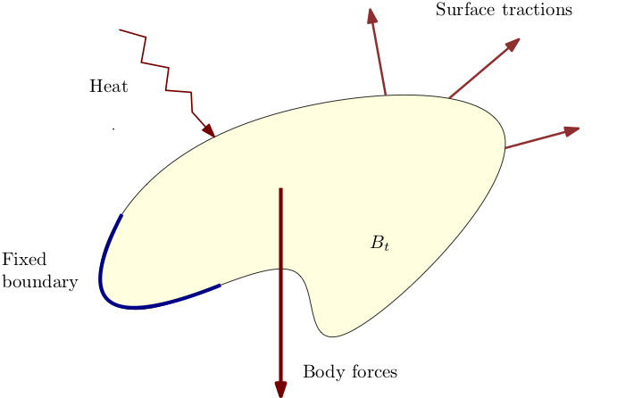
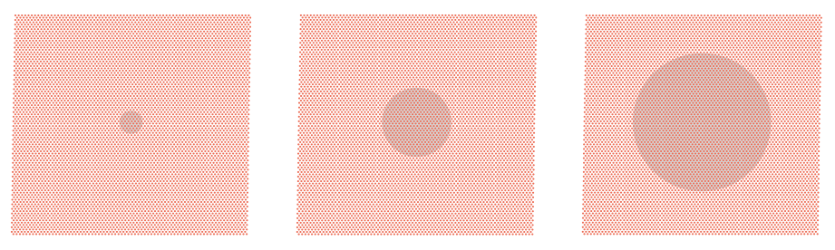
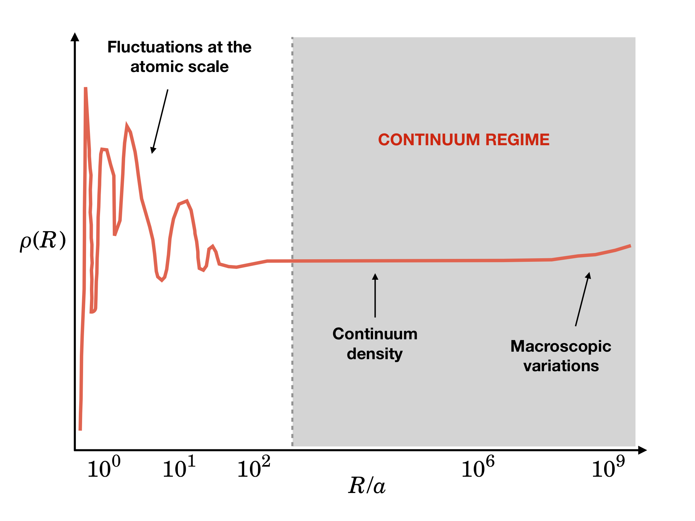

Overview and course contents
Introduction
Welcome to AE 639: Continuum Mechanics! In this course, we will learn the basic principles related to modeling the mechanical behavior of continua. These notes assume a prior background in linear algebra and Euclidean tensor analysis; an introduction to the relevant topics may be found here.
About Continuum Mechanics
"...researchers in elasticity theory are very opinionated, even when they are wrong. During our own work in this field we have refused to fight, and in keeping with this pacifist approach, we now issue these general disclaimers: This book is neither complete nor unbiased." (Marsden, Hughes: Mathematical Foundations of Elasticity)
As the above quote suggests, continuum mechanics has a rich legacy of researchers with very strong opinions. In this course, I will carefully sidestep all polemics and instead focus on providing a broad introduction to continuum mechanics using ideas which are fairly established now. Nevertheless, it is inescapable that some of my own perspectives and choice of emphasis shows up at places. After finishing this course, you will be better placed to dive deeper into the literature and forge your own perspective, if you choose to do so.
"Rational" Thermodynamics
A very popular school of thought in continuum mechanics is the so-called rational thermodynamics school initiated by Clifford Truesdell and his students/associates. Despite the many excellent contributions from members of this school of thought and their crucial role in giving concrete shape to continuum mechanics as we know it today, I will carefully avoid using strong adjectives like rational in describing one particular school of thought since this has an obviously condescending and dismissive attitude towards other perspectives which are also equally, if not more, rational. When necessary, I will refer to what is conventionally called rational thermodynamics as Truesdellian thermodynamics. This choice of name is not to belittle contributions of other excellent researchers from this school - it merely highlights the fact that Truesdell was one of its most vocal proponents.
Why study Continuum Mechanics?
The primary objective of continuum mechanics (and continuum thermodynamics) is to provide a mathematical framework to analyze the behavior of materials at macroscopic length, time and energy scales, when they are subject to external forces and/or energy inputs in the form of heat.

We will focus exclusively on the thermomechanical response of solids though a similar development can be effected for the study of continuum phenomena involving other fields like electric and magnetic fields.
Continuum hypothesis
Fundamental to continuum mechanics is the notion of a continuum. When dealing with materials at the macroscopic scale, we rarely think of them as a collection of atoms. Rather, we intuitively think of it as a substance that fills up the space it occupies. This is essentially what is known as the continuum hypothesis, and this imaginary substance which fills up the space a material occupies is called a continuum. This is best viewed as an idealization of the actual material behavior when dealing with macroscopic length and time scales. Indeed, it is possible to show how the continuum hypothesis is consistent, in an appropriately defined limiting sense, with the fundamental laws of physics. A detailed consideration of these ideas is beyond the scope of this course - the companion course AE 731: Multiscale Modeling of Materials will provide more details on this.
As a qualitative justification of the continuum hypothesis we may think of the following thought experiment. We know that matter, both solid and fluid, is discrete and constituted of atoms at the nanometer length scale. Let us consider a caricature of this as shown in the figure below.

We now consider imaginary disks, shown as filled grey circles in the picture above, of larger and larger radii and compute the number density of atoms inside these disks. A qualitative plot of the number density of atoms as function of the disk radius is shown below - note that the scale of the X axis is logarithmic. (This plot is adapted from G.K. Batchelor's An Introduction to Fluid Dynamics.)

We see that the number density variation exhibits three distinct regimes. For disk radii of the order of nanometers (the typical interatomic spacing $a$ is of the order of a few Angstroms) or below there are large fluctuations. For intermediate length scales larger than the typical atomic length scale and below the typical macroscopic length scales, the number density variation is essentially constant. For macroscopic length scales, we begin to see large wavelength fluctuations of the number density. The key abstraction that we make in continuum mechanics is to ignore the microscopic fluctuations and focus instead entirely on the second and third regimes mentioned above. When we restrict ourselves to these regimes, we may as well introduce an imaginary substance called a continuum that fills up the whole of the space that the body occupies and associated with it a density field that agrees with the aforementioned figure in the continuum regimes. This abstraction is called the continuum hypothesis, and is qualitatively illustrated in the figure below.
Mathematically, the shift in perspective can be illustrated as follows: viewed from the atomic perspective, we need to know the positions of the individual atoms $(q_i)_{i=1}^N \in \mathbb{R}^{3N}$ to describe the actual configuration of the body. However, when $N$ is very large (typically larger than Avogadro's number $\sim 10^{23}$) it is more convenient to describe the body by the region $B \subseteq \mathbb{R}^3$ that it occupies and denote a particular point in the body as $x \in B$. Whereas physical properties are described in the atomic perspective as functions of the phase space $\Gamma \subseteq \mathbb{R}^{3N}\times\mathbb{R}^{3N}$ that collects the positions and momenta of the constituent atoms, physical quantities are represented as fields defined on the body $B \subseteq \mathbb{R}^3$. For instance, the mass density is defined as a function of the form $\rho:B \to \mathbb{R}$ that associates with each $x \in B$ the mass density $\rho(x) \in \mathbb{R}$. Continuum mechanics deals exclusively with this field representation, without any reference to the lower scale atomistic representation.
Note: A natural question that may arise is the relationshipe between these two representations. Such questions, while of both conceptual importance and of practical importance in analyzing molecular simulations, will not be discussed in this course. You are welcome to attend the companion course AE 731 - Multiscale Modeling of Materials to learn more about these connections.
Truesdellian perspective on continuum mechanics
Some proponents of the Truesdellian school of continuum mechanics postulate the existence of a continuum, by fiat, and argue against the necessity for an elaborate microscopic justification of the notion of a continuum and the laws of continuum mechanics.
Key meta-modeling assumptions
In this course, we will develop continuum mechanics as a sub-branch of thermodynamics. We will do so in a manner that respects certain fundamental invariance principles that are cherished across all branches of physics. We will emphasize on two aspects in particular:
- Observer invariance, a.k.a objectivity, and
- Coordinate system invariance (for a given observer).
The more fundamental of the two, namely objectivity, requires that the different observers, who are mutually related in some precisely defined sense, agree upon the basic physical behavior of the system under investigation. This is largely just a restricted version of Einstein's relativity principle, but we will see that there are certain additional features that come into play because of the presence of physical variables, like stress, that are specific to continuum mechanics. The second aspect is invariance of the physical laws, for a given observer, with respect to change of coordinate systems. This is easily accomplished by adopting a coordinate-free language that is provided by a branch of mathematics known as tensor analysis.
A broad summary of this entire course is the systematic application of these two principles to the laws of thermodynamics, and to any postulated material behavior, in a manner that helps us understand the behavior of continua in a reasonably precise manner.
Outline
We will commence with a purely kinematical description of continua, by which we mean an understanding of the geometry of bodies and descriptions of their changes of shape. We will also discuss the structure of Newtonian spacetime briefly as part of this discussion to set the stage where our story unfolds. We will subsequently study the balance principles related to mass, momentum, energy, and entropy, using a celebrated result known as the Green-Naghdi-Rivlin theorem. All these considerations are universal in the sense that they apply to the thermomechanics of any continua. We bring in material specificity with the introduction of constitutive laws that detail how particular materials behave to external stimuli. We will look at elementary examples involving both fluids and solids to illustrate these ideas. Depending on the time available, we will study a variety of special topics involving linear elasticity, variational principles, internal variable formalism to handle dissipative phenomena, etc.